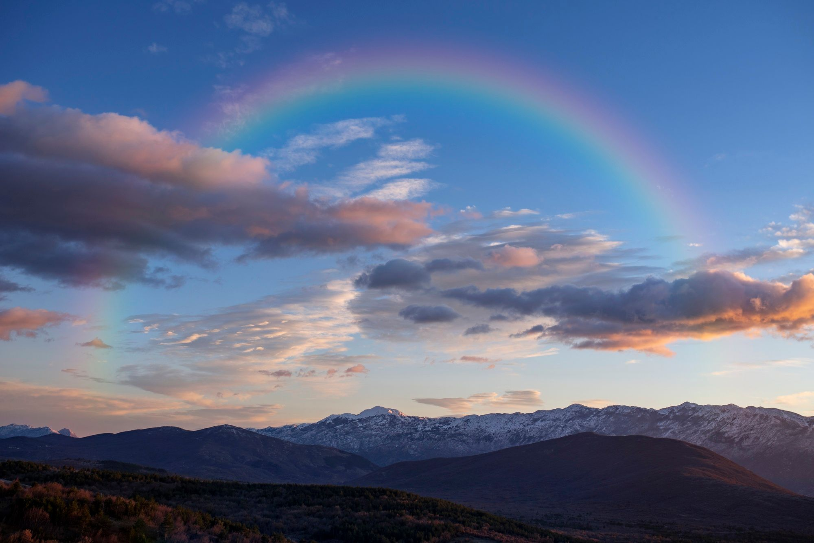

«Και από παντός ζώου εκ πάσης σαρκός, ανά δύο εκ πάντων θέλεις εισάξει εις την κιβωτόν, διά να φυλάξης την ζωήν αυτών μετά σεαυτού· άρσεν και θήλυ θέλουσιν είσθαι. Από των πτηνών κατά το είδος αυτών, και από των κτηνών κατά το είδος αυτών, από πάντων των ερπετών της γης κατά το είδος αυτών, ανά δύο εκ πάντων θέλουσιν εισέλθει προς σε, διά να φυλάξης την ζωήν αυτών» (Γένεσις ς΄ 19-20)
Συνεχίζοντας το αφιέρωμά μας στο θέμα του κατακλυσμού, θα απαντήσουμε σε μια συχνή απορία για το πώς χώρεσαν στην κιβωτό του Νώε όλα τα είδη ζώων.
Αρχικά, είναι προφανές ότι στην κιβωτό δεν χρειάστηκε να εισέλθουν τα είδη υδρόβιας ζωής. Έπειτα, δεν χρειαζόταν να μπουν μέσα στην κιβωτό όλες οι ποικιλίες (ράτσες) που συναντάμε σήμερα σε ένα είδος. Για να το καταλάβουμε αυτό ας σκεφτούμε ότι σήμερα υπάρχουν περισσότερες από 130 ράτσες σκύλων (ποιμενικός, ντόπερμαν, κανίς, μπουλντόγκ κλπ.). Ο Νώε δεν πήρε μαζί του ένα ζευγάρι από κάθε ράτσα αλλά απλώς ένα ζευγάρι από το είδος του σκύλου. Οι ράτσες προέκυψαν αργότερα μέσα από τις ποικιλίες των γονιδίων οι οποίες εκφράστηκαν μέσα από τις διασταυρώσεις και ανάλογα με τις περιοχές που διασκορπίστηκε γεωγραφικά το είδος αυτό μετά τον κατακλυσμό. Άλλωστε μέσα στην κιβωτό δεν υπήρχαν άνθρωποι από όλες τις ράτσες που βλέπουμε σήμερα, αλλά μόνο 8 άνθρωποι της ίδιας φυλής. Κι όμως από αυτούς έχει προέλθει όλη οι ποικιλία ανθρώπων που υπάρχει σήμερα.
Σύμφωνα λοιπόν με τους «χειρότερους» υπολογισμούς, στην κιβωτό χρειάστηκε να μπουν το πολύ 35.000 ζώα. Επειδή υπάρχουν ζώα με μέγεθος πολύ μεγάλο (π.χ. ελέφαντες) αλλά και πολύ μικρό (π.χ. ποντίκια) μπορούμε να θεωρήσουμε ως μέσο μέγεθος ενός ζώου της κιβωτού το πρόβατο. Είναι δηλαδή σαν να έπρεπε μέσα στην κιβωτό να μπουν 35.000 πρόβατα. Αν υποθέσουμε ότι σε ένα μεγάλο βαγόνι τραίνου μεταφορών μπορούν να χωρέσουν 240 πρόβατα, τότε θα χρειάζονταν 150 τέτοια βαγόνια, τα οποία όμως δεν καλύπτουν ούτε το 1/3 της χωρητικότητας της κιβωτού, όπως την αναφέραμε στο προηγούμενο άρθρο (περίπου 40.000 κυβικά μέτρα). Είναι επίσης πιθανόν από τα μεγάλου μεγέθους είδη ζώων, ο Νώε να μην πήρε ενήλικα άτομα αλλά νήπια ώστε και λιγότερο χώρο να καταλαμβάνουν αλλά και να καταναλώνουν λιγότερη τροφή και να είναι πιο ήσυχα.
Άρα λοιπόν υπήρχε άπλετος χώρος ώστε τα ζώα να τακτοποιηθούν και να ζουν με άνεση, καθώς και άφθονος χώρος για αποθήκες τροφίμων. Ίσως και ένας ολόκληρος όροφος της κιβωτού να ήταν άδειος. Άλλωστε, είναι γνωστό ότι για να μπορεί να επιπλέει ένα σκάφος θα πρέπει να έχει αρκετό κενό χώρο.
Στη σημερινή κιβωτό, που είναι η εκκλησία του Χριστού, υπάρχει χώρος και για σένα αγαπητέ αναγνώστη. Ο Νώε, ως κήρυκας δικαιοσύνης, προειδοποιούσε τους ανθρώπους να διασωθούν από την επικείμενη κρίση του Θεού που θα ερχόταν μέσω ενός γεγονότος που δεν είχε ξανασυμβεί στη Γη. Το κήρυγμα είναι και σήμερα το ίδιο διά στόματος του Κυρίου μας Ιησού Χριστού:
«Διότι καθώς εν ταις ημέραις ταις προ του κατακλυσμού ήσαν τρώγοντες και πίνοντες, νυμφευόμενοι και νυμφεύοντες, έως της ημέρας καθ’ ην ο Νώε εισήλθεν εις την κιβωτόν, και δεν ενόησαν, εωσού ήλθεν ο κατακλυσμός και εσήκωσε πάντας, ούτω θέλει είσθαι και η παρουσία του Υιού του ανθρώπου» (Ματθ. κδ΄ 38-39)
Στο επόμενο μέρος, Θεού θέλοντος, θα ολοκληρώσουμε το θέμα του κατακλυσμού απαντώντας στο ερώτημα, πού βρέθηκε όλο αυτό το νερό που κάλυψε τη Γη και πού κατέληξε, καθώς επίσης θα εξετάσουμε αν έχουν βρεθεί ενδείξεις ότι κάποτε έλαβε χώρα ένα τέτοιου μεγέθους φαινόμενο στον πλανήτη μας.
Η ομάδα «Χριστιανισμός και Επιστήμη»
www.christianity-science.gr
Published in the team's column in the newspaper “Christianity”, .